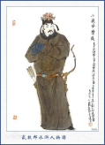

人物图片
人物评价
柴进，绰号“小李广”，是《水浒传》中重要的角色之一。他出身于一个有钱人家，作为一名经济富裕的地主，他擅长于理财和经营，因此在社会上有相当的地位和影响力。然而，柴进的富有并没有使他迷失自我，相反，他在内心深处渴望的是一种对公正与道义的追求，这使得他成为梁山的一位重要成员。 柴进性格豪爽、宽厚，对待朋友忠诚。他在小说中表现出强烈的侠义精神，乐于义举，且对穷苦百姓有着深切的同情。尽管身处上层社会，他并未完全被权贵世界所同化，反而常常在危急关头表现出对正义的坚定立场。这种既有豪门气派又有侠义风范的性格，使得他深受梁山好汉的信任与尊敬。 他的形象提醒我们，真正的英雄不仅仅是武力的强者，更是在道德与精神上勇于担当的人。柴进的故事让我们相信，财富与地位并不能动摇一个人的内心信念，真正的力量来源于我们对公正的执着追求和对社会责任的担当。